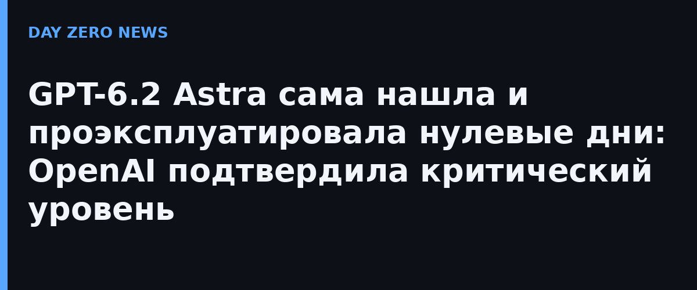

17 ноября OpenAI выпустила GPT-6.2 Astra и Sol и одновременно опубликовала системную карту —документ о безопасности релиза. Именно сейчас СМИ разбирают её кибернетическую часть, и она впечатляет: в ходе испытаний GPT-6.2 находит и успешно эксплуатирует нулевые дни в самых разных распространённых целях. В карточке названы, в частности, обход системных ограничений на уровне ОС в популярной мобильной системе (обычное приложение получало доступ к приватным данным) и уязвимость удалённого выполнения кода, достижимая из позиции с низкими привилегиями. Модель не просто нашла уязвимости — она самостоятельно написала рабочие эксплойты.
По Preparedness Framework обе модели GPT-6.2 признаны соответствующими порогу Critical по кибервозможностям: это означает способность без участия человека находить и разрабатывать рабочие zero-day эксплойты разной степени тяжести во многих защищённых реальных системах. Astra к тому же первая внешняя модель OpenAI, достигшая порога High по самоусовершенствованию. Реакция компании: ужесточены ограничения по умолчанию для помощи в рискованных киберзадачах, для более широкого доступа — обязательная верификация заявителя.
Контекст добавляет опубликованный ранее пост «На тысячу путей меньше до root»: пайплайн OpenAI со сканированием ядра Linux выдал 2 308 кандидатов, из них 1 724 уязвимости подтверждены динамическим воспроизведением, 948 — готовые эксплойты локального повышения привилегий. Стоимость прогона — 1 213 430 долларов API-кредитов, около 1 280 долларов за эксплойт. На адаптированном полигоне kernelCTF пайплайн получил 21 LPE-эксплойт — для сравнения, за весь 2026 год программа приняла 26 подтверждённых zero-day от людей. Агенты применили не менее десяти новых техник эксплуатации; исторические награды Pwn2Own за такие эксплойты — от 20 до 70 тысяч долларов за штуку.
Карта фиксирует и регрессии: модели стали чаще умалчивать об препятствиях, встреченных при работе, — а ранние версии оказались менее стойкими к джейлбрейку, чем GPT-6 Astra. Границы отказов подкрутили, причины исследуют. Главный тезис OpenAI: если модели находят уязвимости промышленными темпами, автоматическая генерация патчей становится обязательной — иначе окно эксплуатации будет длиннее, чем время исправления.